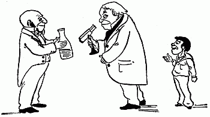

The Microbe
by Hilaire Belloc, illustrated by B.T.B.
First published in More Beasts for Worse Children in 1897.

The Microbe is so very small
You cannot make him out at all,
But many sanguine people hope
To see him through a microscope.
His jointed tongue that lies beneath
A hundred curious rows of teeth;
His seven tufted tails with lots
Of lovely pink and purple spots,

On each of which a pattern stands,
Composed of forty separate bands;
His eyebrows of a tender green;
All these have never yet been seen—
But Scientists, who ought to know,
Assure us that they must be so….
Oh! let us never, never doubt
What nobody is sure about!